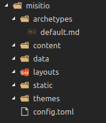

Realizado por Michael Reyes & Fabián Rodríguez
Instalación
Windows:
- [Descargar Hugo][] para instalarlo nos hará falta descomprimirlo y colocarlo en una carpeta que queramos y luego crear la variable de entorno hacia el .exe - Una vez hecho, para comprobar que está funcionando correctamente, hay que abrir un cmd y escribir
hugo --versionLinux:
- En Ubuntu se puede acceder a la tienda de software buscar Hugo e instalar. - Para Debian y Ubuntu se puede instalar por terminal ejecutando:
sudo apt-get install hugosudo pacman -Syu hugosudo dnf install hugoMac OS:
Para Mac tenemos 3 modos de instalarlo - Modo 1: Homebrew Ejecutar en terminal:
brew install hugoCrear el sitio
Necesitamos crear una carpeta para el proyecto, entraremos a ella mediante terminal y ejecutaremos el siguiente comando para crear un sitio que es la estructura básica de una página hecha con Hugo:
hugo new site misitio
Instalar un tema
Para poder instalar un tema, es necesario que tengamos instalado el **[git][]**, cuando lo tengamos instalado accedemos desde la terminal a la carpeta del sitio que hemos creado y lo inicializamos:
git inity luego según el tema que hayamos elegido algunos nos pondrán unos pasos a seguir, sólo será seguirlos, y los que no ponga nada, habrá un enlace a su github, podremos hacer un **git clone**, aunque recomiendo utilizar **git submodule add** en su lugar, ya que de ese modo nos enlaza el tema desde su repositorio pero no mete todos los archivos en nuestro proyecto, sólo será una referencia.
Por ejemplo para añadir el tema Ananke, se haría del siguiente modo:
git submodule add https://github.com/budparr/gohugo-theme-ananke.git themes/anankeecho 'theme = "ananke"' >> config.tomlFichero de configuración
Para empezar, podemos utilizar 3 formatos distintos, Hugo por defecto leerá en orden los ficheros **[.toml](#/4)** > **[.yml](#/4/1)** > **[.json](#/4/2)**
baseURL = "https://yoursite.example.com/"
footnoteReturnLinkContents = "↩"
title = "My Hugo Site"
[params]
AuthorName = "Jon Doe"
GitHubUser = "spf13"
ListOfFoo = ["foo1", "foo2"]
SidebarRecentLimit = 5
Subtitle = "Hugo is Absurdly Fast!"
[permalinks]
post = "/:year/:month/:title/"
baseURL: https://yoursite.example.com/
footnoteReturnLinkContents: ↩
params:
AuthorName: Jon Doe
GitHubUser: spf13
ListOfFoo:
- foo1
- foo2
SidebarRecentLimit: 5
Subtitle: Hugo is Absurdly Fast!
permalinks:
post: /:year/:month/:title/
title: My Hugo Site
{
"baseURL": "https://yoursite.example.com/",
"footnoteReturnLinkContents": "↩",
"params": {
"AuthorName": "Jon Doe",
"GitHubUser": "spf13",
"SidebarRecentLimit": 5,
"Subtitle": "Hugo is Absurdly Fast!"
},
"permalinks": {
"post": "/:year/:month/:title/"
},
"title": "My Hugo Site"
}
Creación de nuestro sitio web
Preparación de páginas
En este paso copiaremos los archivos del tema a sus respectivas carpetas en nuestro sitio,